결론부터: Opus 5.5, effort medium
결론은 한 줄이에요. 대부분의 일은 Opus 5.5에서, effort는 기본값인 medium으로 시작하면 돼요. Opus 5.5는 Claude Code의 기본 모델이고, 입력·출력 토큰 값이 Fable 5.2의 절반이에요.
영상은 이 출발점에서 세 갈래로 나가요. 가운데 Opus 5.5 카드의 effort 칸에 medium이 켜져 있고, 위·오른쪽·아래로 화살표가 하나씩 뻗어요. 위는 '모델은 언제 바꾸나', 오른쪽은 'effort는 언제 올리나', 아래는 '어떤 일을 작은 모델에 넘기나'예요. 이 문서도 이 세 질문 순서로 따라가요.
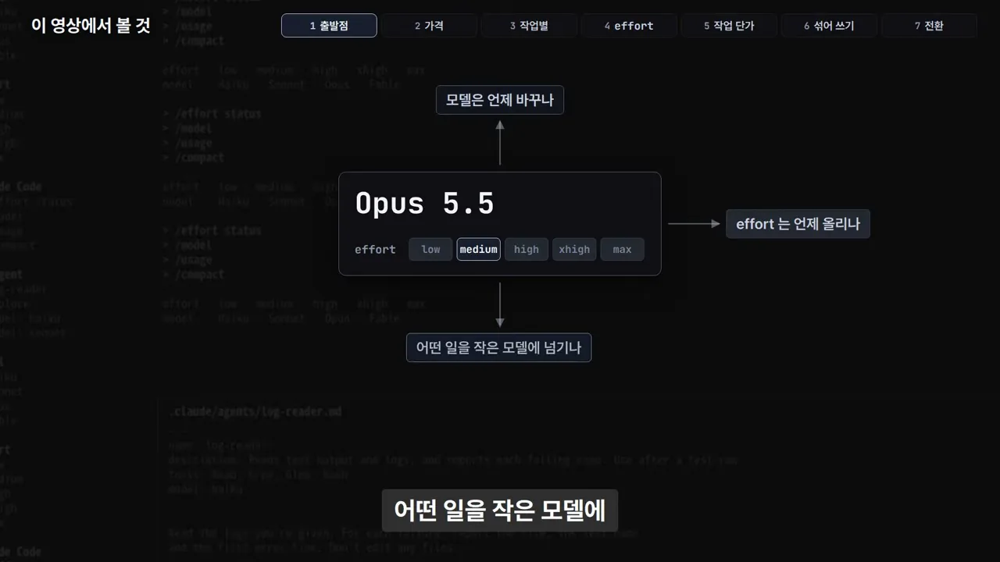
중간에 직관과 반대인 숫자가 하나 나온다고 미리 알려 줘요. 위 막대는 '전부 high effort로 돌린다', 아래 막대는 'low로 돌리고 실패한 것만 다시 돌린다'예요. 아래쪽 비용 막대가 더 짧고 '더 쌈' 표시가 붙어 있어요. 정확한 숫자는 3절에서 나와요.
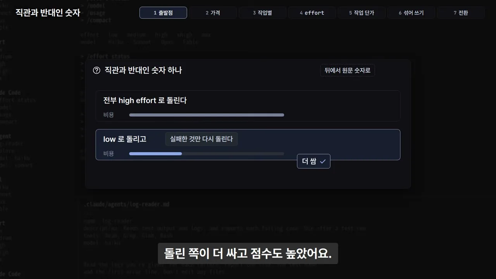
네 모델과 가격
지금 누구나 쓸 수 있는 Claude 모델은 넷이에요. 같은 밤 골목 사진 한 장을 네 모델이 각자 그린 결과가 나란히 나와요. 그림 그리는 엔진까지 모델이 파이썬으로 직접 짜고, 레이어를 하나씩 쌓아요. 왼쪽 Haiku 5.5에서 오른쪽 Fable 5.2로 갈수록 간판과 골목 디테일이 늘어나요.
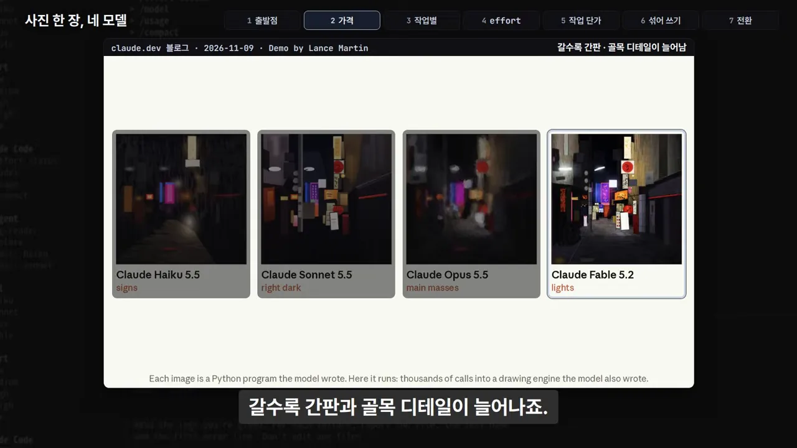
가격은 100만 토큰당 입력/출력 순서예요. 카드 사이의 '×2' 표시를 보면 Sonnet에서 Opus, Opus에서 Fable로 한 칸 오를 때마다 값이 딱 두 배예요. 카드 아래 컨텍스트 창은 넷 다 1M 토큰이에요.
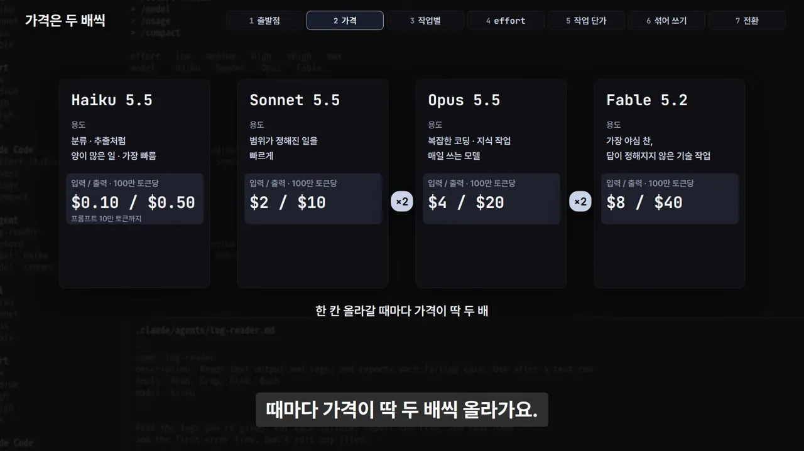
| 모델 | 입력 / 출력 (100만 토큰당) | 영상이 말한 쓰임 |
|---|---|---|
| Haiku 5.5 | $0.10 / $0.50 (프롬프트 10만 토큰까지) | 분류·추출처럼 양이 많은 일. 가장 빠름 |
| Sonnet 5.5 | $2 / $10 | 범위가 정해진 일을 빠르게 |
| Opus 5.5 | $4 / $20 | 복잡한 코딩과 지식 작업에 매일 쓰는 모델 |
| Fable 5.2 | $8 / $40 | 가장 야심 차고 답이 정해지지 않은 기술 작업 |
작업별로 어디서 시작할까요
출발점은 Opus 5.5예요. 영상에 따르면 Claude Code는 Pro·Max·Ultra·Team·Enterprise 요금제와 Anthropic API(Application Programming Interface) 모두에서 Opus 5.5를 기본으로 써요. 능력과 비용의 균형이 맞아서 일상적인 개발과 디버깅도 여기서 시작해요. 뭘 쓸지 모르겠으면 기본값 그대로 두고, 하는 일에 따라 올리거나 내려요.
아래 화면이 그 지도예요. 가운데가 Opus 5.5(medium)이고, 아래 줄 왼쪽이 Haiku 5.5, 오른쪽이 Sonnet 5.5, 맨 위 줄이 Fable 5.2예요. Sonnet 칸 오른쪽 위의 'Opus 토큰 가격의 ½' 배지가 Sonnet으로 내려가는 이유예요. 맨 위 Fable 칸 아래에는 '작업 종류 말고도 올리는 경우 두 가지'가 따로 적혀 있어요.
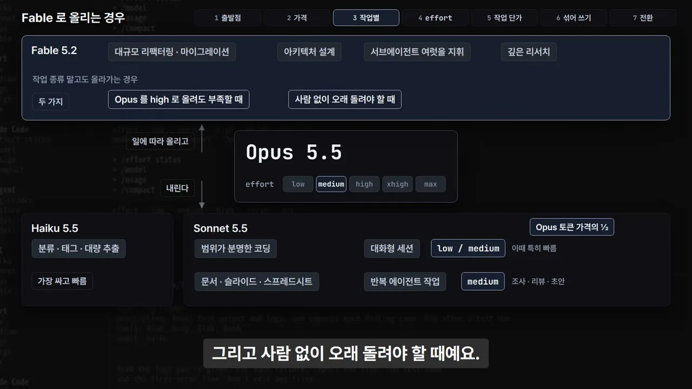
| 이런 일이면 | 시작 모델 | effort | 영상이 든 이유 |
|---|---|---|---|
| 일상 개발·디버깅, 아직 모를 때 | Opus 5.5 | medium (기본) | 능력과 비용의 균형 |
| 버그 수정, 스펙이 정해진 기능 | Sonnet 5.5 | — | Opus 토큰 값의 절반으로 잘 처리 |
| 일상 문서·슬라이드·스프레드시트 | Sonnet 5.5 | — | — |
| 조사·리뷰 초안처럼 반복하는 에이전트 작업 | Sonnet 5.5 | medium | — |
| 바로 답을 기다리는 대화형 세션 | Sonnet 5.5 | low 또는 medium | 이때 특히 빠름 |
| 분류·태그 달기·대량 추출 | Haiku 5.5 | — | 제품군에서 가장 싸고 빠름 |
| 마이그레이션·성능 최적화 | Opus 5.5 (규모가 크면 Fable 5.2) | — | 스펙이 분명해도 어려움 |
| 대규모 리팩터링·마이그레이션, 아키텍처 설계, 서브에이전트 여럿 지휘, 깊은 리서치 | Fable 5.2 | — | — |
짚어 둘 함정이 하나 있어요. 스펙이 명확하다고 무조건 Sonnet은 아니에요. 마이그레이션이나 성능 최적화는 스펙이 분명해도 어려운 일이라 Opus가 맞고, 규모가 크면 Fable이에요.
Fable로 올라가는 경우는 작업 종류 말고도 두 가지가 더 있어요. Opus를 high로 올려도 부족할 때, 그리고 사람 없이 오래 돌려야 할 때예요. Fable이 맞는 일의 예로, 3D 장면 하나를 와이어프레임부터 레이트레이싱까지 16가지 방식으로 다시 그리는 데모가 나와요. 화면은 점을 삼각형으로 잇는 와이어프레임 단계예요.
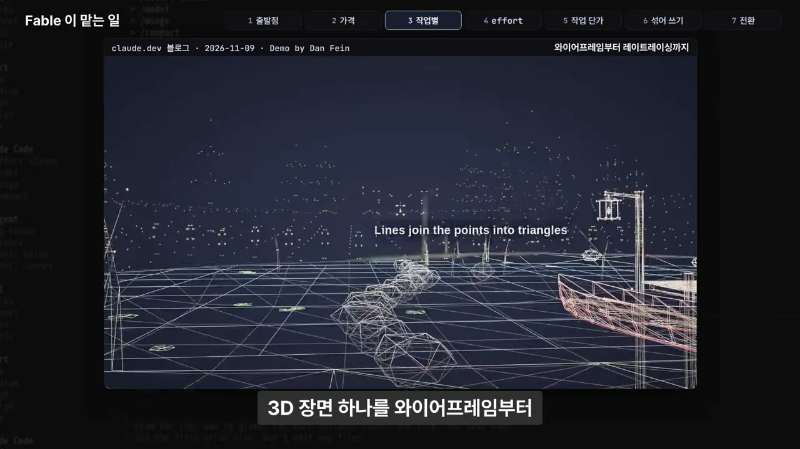
모델보다 effort 먼저, 토큰 값보다 작업 값
모델을 바꾸기 전에 먼저 할 게 있어요. effort 조절이에요. 왼쪽 계기판이 low부터 max까지의 effort 다이얼이고, 오른쪽에 이 다이얼이 정하는 세 가지가 적혀 있어요. 얼마나 오래 생각할지, 도구를 몇 번 부를지, 자기 작업을 얼마나 다시 확인할지예요. 그 아래 두 줄 슬라이더를 보면 '모델 교체'는 칸이 성기고 'effort'는 촘촘해요. 비용과 능력을 더 잘게 맞출 수 있다는 뜻이에요.
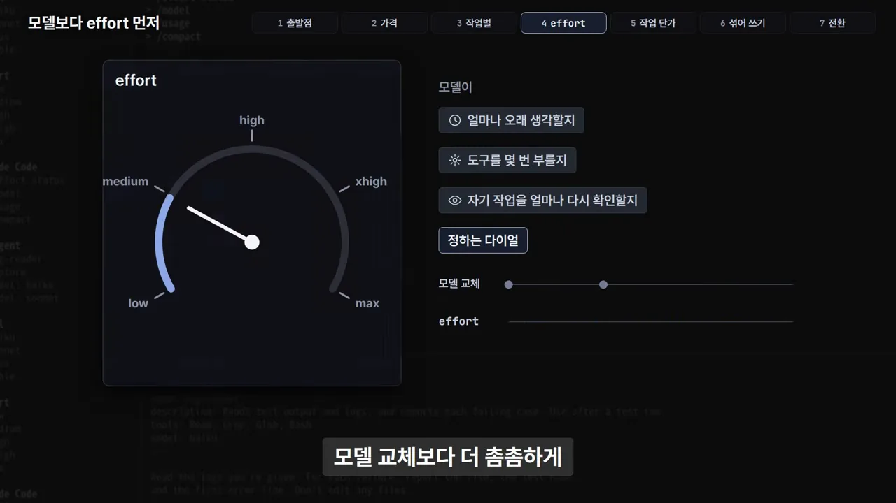
/effort status로 확인할 수 있어요.
영상 02:31에서 보기
effort 한 칸의 값
SWE-bench Pro에서 Opus 5.5를 high 기준으로 놓고 비교한 숫자예요. 흰 막대가 점수, 파란 막대가 비용이에요. medium은 점수가 약 2.5점 낮고 비용은 약 70%, low는 약 8점 낮고 비용은 1/3이에요.
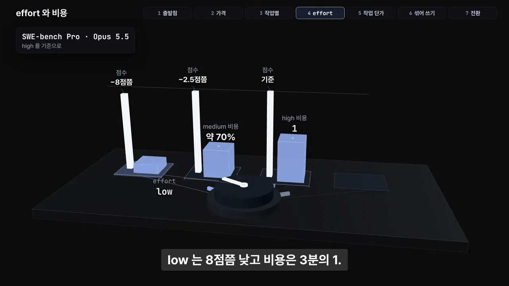
반대 방향은 다르게 움직여요. xhigh로 올리면 점수는 약 1.4점 오르는데, 빨간 비용 막대는 high의 2.5배로 솟아요. high를 넘어가면 effort 한 칸이 모델 한 칸 올리는 값만큼 비쌀 수 있다는 거예요.
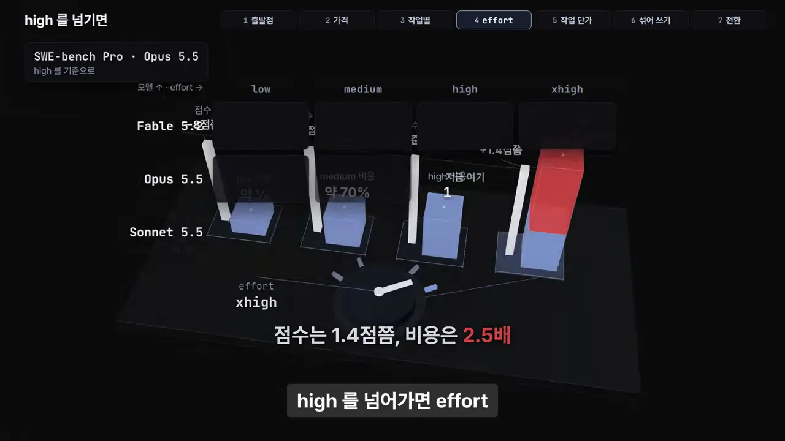
| effort (Opus 5.5) | 점수 (high 대비) | 비용 (high 대비) |
|---|---|---|
| low | 약 8점 낮음 | 약 1/3 |
| medium | 약 2.5점 낮음 | 약 70% |
| high | 기준 | 1 |
| xhigh | 약 1.4점 높음 | 2.5배 |
그래서 원칙이 이래요. 표의 세로줄은 모델(Fable 5.2, Opus 5.5, Sonnet 5.5), 가로줄은 effort예요. 지금 Opus high에 있는데 xhigh로 가고 싶어지면(빨간 X), 그 칸 대신 위 줄 Fable 5.2의 더 낮은 effort 칸을 '먼저 시험'해요. 반대로 한 칸 내려도 원하는 결과가 나오면 그만큼 싸게 끝나요.

다만 effort에도 한계가 있어요. 모델에 없는 지식이나 실력은 effort를 올려도 생기지 않아요. 그땐 모델을 올려야 해요.
모델이 일을 못 해낼 때의 순서
원문이 권하는 순서는 세 칸이에요. 첫 칸 '먼저'는 테스트·빌드처럼 모델이 자기 결과를 확인할 수단을 주는 거예요. 아래 메모처럼 대개 effort를 바꾸는 것보다 싸요. 둘째 칸이 effort 한 단계, 셋째 칸이 '그래도 안 되면' 위 모델로 가되 effort는 낮춰서 시작하는 거예요.
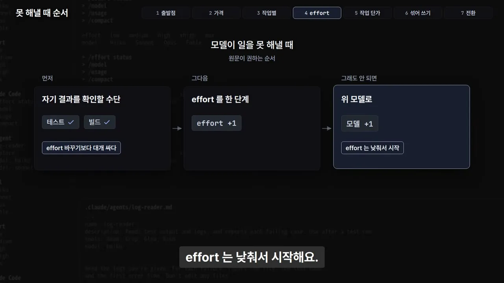
토큰 단가와 작업 단가는 달라요
여기서 가격표를 다시 봐야 해요. 토큰당 값이 비싸다고 작업 하나 끝내는 값까지 비싼 건 아니거든요. 첫 예는 Terminal-Bench 3.0이에요. 위 두 줄이 점수예요. 이전 세대 Fable 5.1을 max로 돌리면 58.0%, Opus 5.5를 high로 돌리면 58.9%예요. 아래 두 줄은 쓴 토큰이고, Opus 쪽 막대가 '절반'이에요.
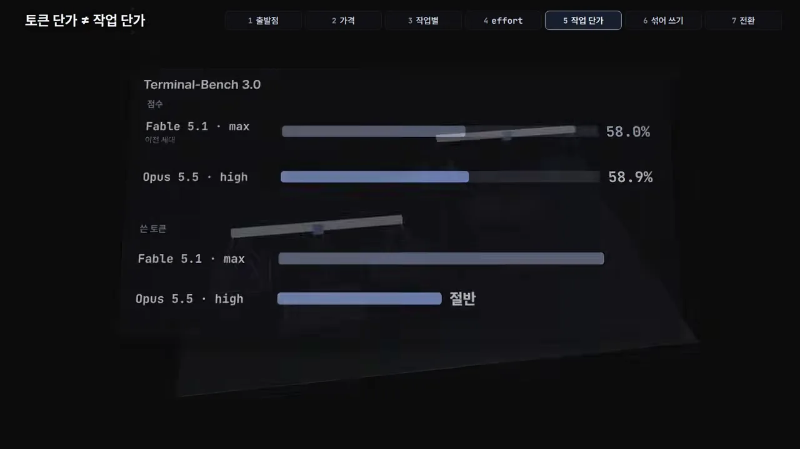
가장 어려운 일에서는 반대 방향으로 뒤집혀요. FrontierCode 2.0을 저울 두 개로 그렸어요. 왼쪽 저울은 100만 토큰당 단가로, Fable(/) 쪽이 두 배 무거워요. 오른쪽 저울은 작업 단가예요. Fable 5.2 high가 45.3%, Opus 5.5 max가 45.5%로 점수는 거의 같은데, Fable 접시에 '작업당 비용 약 절반'이 붙어 있어요.
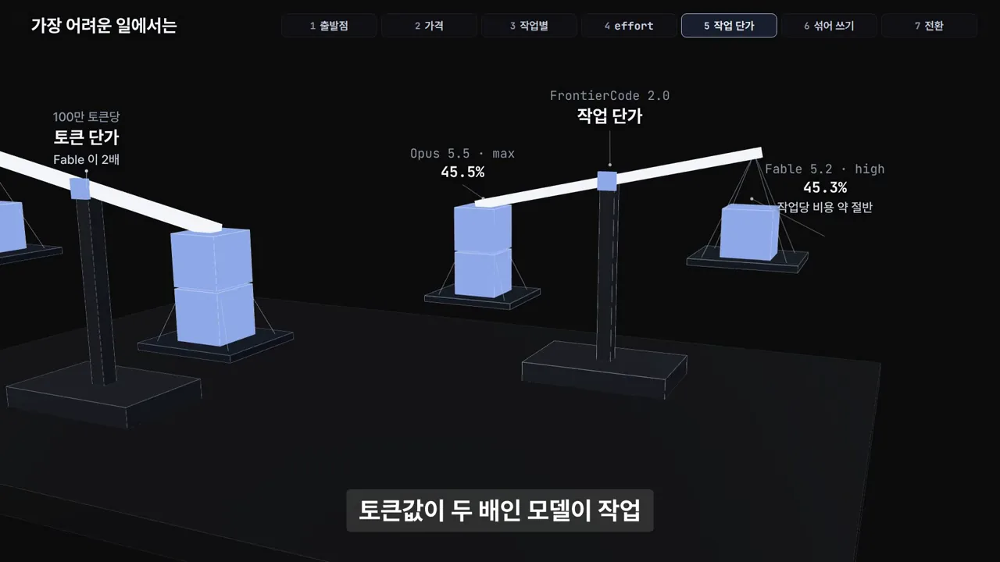
그래서 어려운 일에서 Opus를 high 위로 올리기 전에 Fable을 먼저 시험해 보래요. 화면 위쪽을 보면 흐리게 처리된 'Opus 5.5 · xhigh'로 올리기 전에, 'Opus 5.5 · high'에서 Fable 5.2로 화살표가 가고 '먼저 시험' 표시가 붙어요. 아래쪽 '일상적인 일은 여전히' 줄에는 Opus 5.5 medium 카드와 '여기서 시작' 깃발이 있어요.
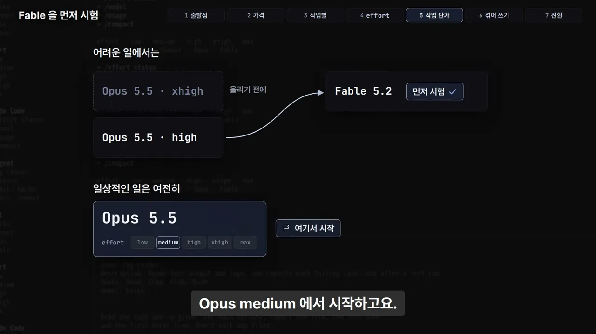
낮게 돌리고 실패만 다시
처음에 예고한 숫자예요. 결과를 자동으로 확인할 수 있는 일이면 전부 low로 돌리고, 실패한 것만 high로 다시 돌려요. 화면 왼쪽 위 카드가 이 방식의 결과로, 약 97% 통과에 작업당 $0.17이에요. 오른쪽 카드는 처음부터 전부 high로 돌린 경우로, 95.3%에 $0.29예요. 둘 다 같은 SWE-bench Pro, 같은 Opus 5.5예요.
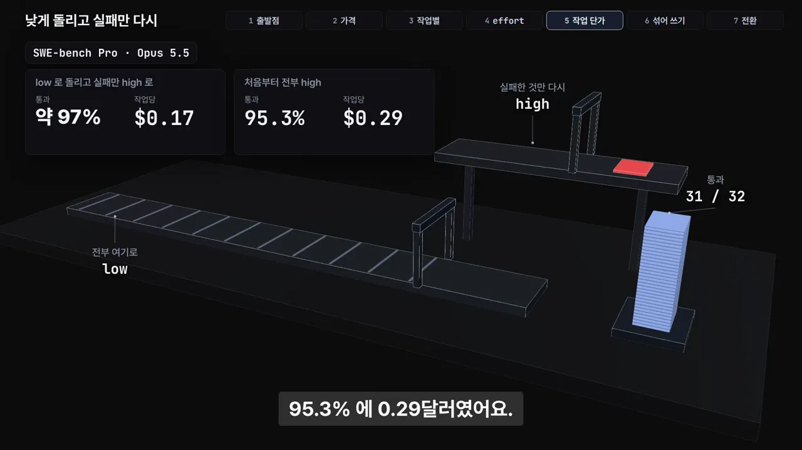
| 비교 | 벤치마크 | 결과 |
|---|---|---|
| Fable 5.1 max vs Opus 5.5 high | Terminal-Bench 3.0 | 58.0% vs 58.9%, Opus가 토큰 절반 |
| Opus 5.5 max vs Fable 5.2 high | FrontierCode 2.0 | 45.5% vs 45.3%, Fable이 작업당 비용 약 절반 |
| 전부 high vs low 후 실패만 high (Opus 5.5) | SWE-bench Pro | 95.3%·$0.29 vs 약 97%·$0.17 |
섞어 쓰기와 서브에이전트
그래서 모델은 섞어 써요. 커피 원두를 파는 온라인 가게 하나를 네 모델이 나눠 맡은 데모예요. 왼쪽 위 Fable 5.2는 가게 전체를 자바스크립트에서 타입스크립트로 옮기고, 왼쪽 아래 숫자처럼 파일 19개를 다 옮겨요. 오른쪽 위 Opus 5.5는 월 구독이라는 새 결제 방식을 만들고 테스트 63개를 통과시켜요. Opus는 Fable의 새 코드가 들어온 다음에 시작해요. 왼쪽 아래 Sonnet 5.5는 상품 페이지 24개의 문구를 쓰고, 오른쪽 아래 Haiku 5.5는 고객 문의 480건을 맞는 팀으로 나눠요. 가운데 떠 있는 창이 완성된 상품 페이지예요.
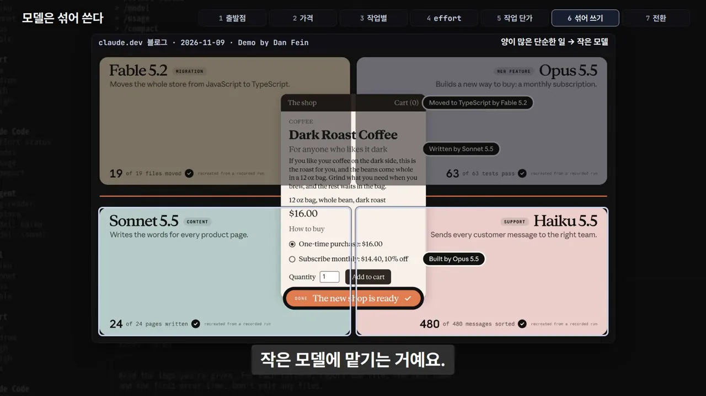
서브에이전트는 자기 모델 단가로 돌아요
서브에이전트도 같은 원리예요. 왼쪽 그림에서 메인 세션이 일을 넘기면, 서브에이전트는 자기 컨텍스트 창에서 일하고 요약만 돌려줘요. 아래 줄에 적힌 대로 비용은 그 서브에이전트가 쓰는 모델 단가로 나가요. 오른쪽이 원문에 실린 예시 정의 파일 .claude/agents/log-reader.md예요.

model: haiku 한 줄로 이 일의 단가가 Haiku로 내려가요.
영상 05:04에서 보기
파일 내용은 이래요. 테스트 로그를 읽고, 실패한 케이스마다 파일·테스트 이름·첫 에러 줄만 보고하게 해요. 파일은 고치지 말라고 못 박고, 모델은 Haiku로 둬요.
---
name: log-reader
description: Reads test output and logs, and reports each failing case. Use after a test run.
tools: Read, Grep, Glob, Bash
model: haiku
---
Read the logs you're given. For each failure, report the file, the test name and the first error line. Don't edit any files.조건이 하나 있어요. 왼쪽 '작은 모델에' 칸에는 실수해도 금방 알아챌 수 있는 일만 들어가요. 파일 찾기, 테스트 돌리기, 로그 읽기예요. 오른쪽 '메인 모델에' 칸에는 코드 수정과 판단이 남아요. 아래 빨간 줄이 이유예요. 작은 모델이 검색 결과를 잘못 읽으면 메인 모델이 엉뚱한 파일을 열어서 토큰을 쓰게 되거든요.
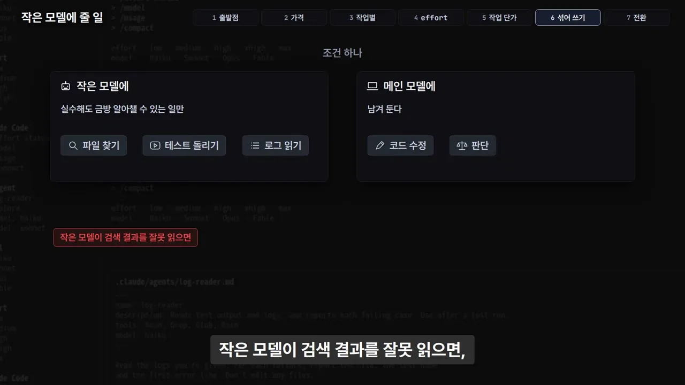
지도 데모가 그 구조예요. 자전거 경로·안개·기온 같은 레이어를 요청하면 Opus 5.5가 계획을 세우고, Haiku 5.5 서브에이전트 여러 개가 동시에 붙어서 같은 지도에 조각을 그려요. 왼쪽 패널 아래 '자전거 경로 · 4 Haiku 5.5 agents'처럼, 자전거 경로는 4개가 나눠 그려요. 공원을 칠할 때는 모두 28개가 붙어요.
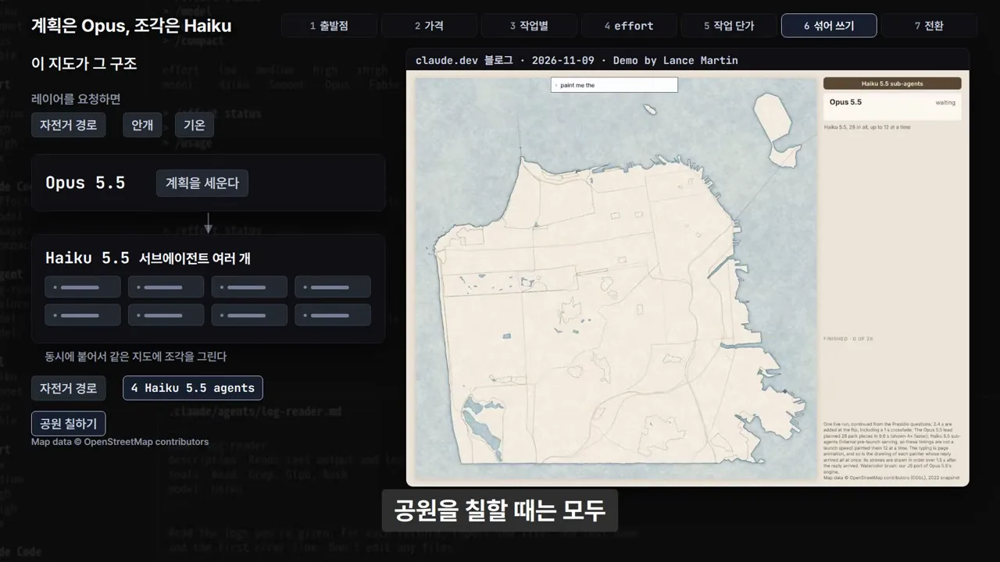
여기서 하나 짚고 가요. 최신 Claude Code의 기본 Explore 서브에이전트는 이제 늘 Haiku로 돌지 않아요. 화면에서 '늘 Haiku로 돈다'에 취소선이 그어지고, '지금 세션의 모델로 돈다'가 붙어요. 탐색을 싸게 하려면 이름이 Explore인 서브에이전트를 직접 만들고 model: haiku를 넣으면 돼요.

일이 한 창에 안 들어가면: 리드와 워커
일이 한 컨텍스트에 다 안 들어갈 만큼 크면 큰 모델이 리드를 맡아 일을 쪼개요. 싼 워커 여럿에게 동시에 나눠 주고 결과를 합쳐요. 화면 가운데 별이 리드 Opus 5.5, 아래 작은 별들이 워커 Sonnet 5.5예요. 오른쪽 메모처럼 워커는 한 번에 최대 25개, 바닥의 블록들은 약 2,200만 토큰짜리 소스 코드예요. 왼쪽 위 비용 막대를 보면 Opus 혼자 기본 effort로 돌릴 때보다 리드와 워커 조합이 약 1/3 적고, 점수는 거의 같아요.
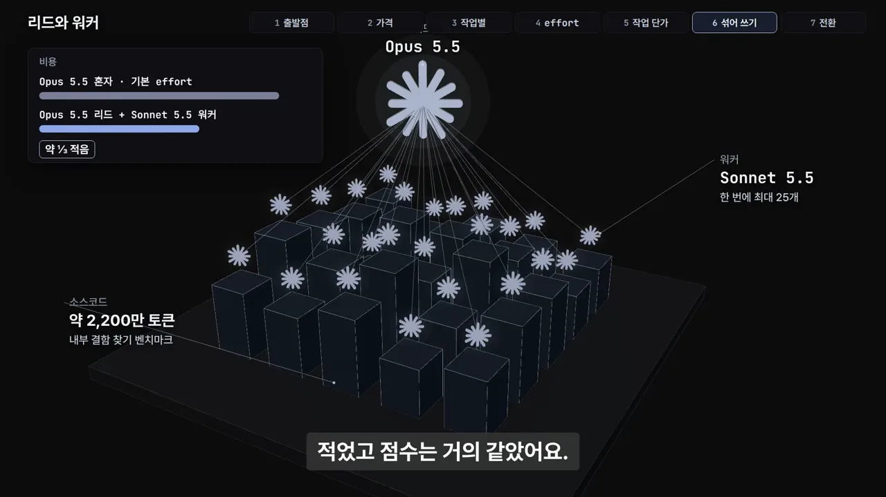
모델 바꾸는 타이밍과 내 작업으로 재 보기
마지막은 모델을 바꾸는 타이밍이에요. 프롬프트 캐시는 그 캐시를 쓴 모델의 것이에요. 그래서 새 모델로 바꾼 첫 턴에는 대화 전체를 캐시에 새로 쓰는 값을 내요. 화면에서 왼쪽 '지금 모델' 위의 높은 블록이 대화 전체 캐시예요. 아래 그림은 그 블록을 /compact로 납작하게 줄인 뒤 오른쪽 '새 모델'로 옮기는 장면이에요. 오른쪽 위 빈 기둥이 첫 턴에 내는 캐시 새로 쓰기 값이에요.
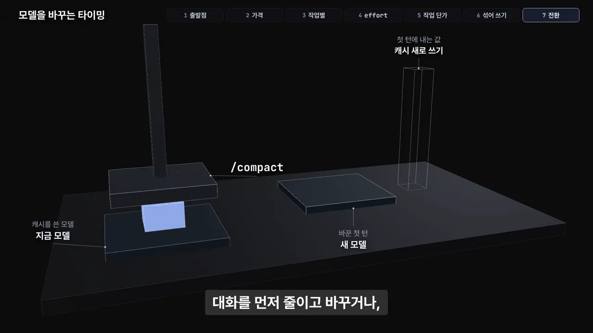
아래 모델로 내려갈 때는 하나가 더 사라져요. 오른쪽 '앞 모델'이 해 둔 추론이 왼쪽 '아래 모델'로 가는 길에 빨간 X가 있어요. 작은 모델은 큰 모델의 생각 기록을 읽지 못하거든요. 그래서 한 덩어리 일이 끝난 자연스러운 지점에서 바꾸는 게 좋아요.
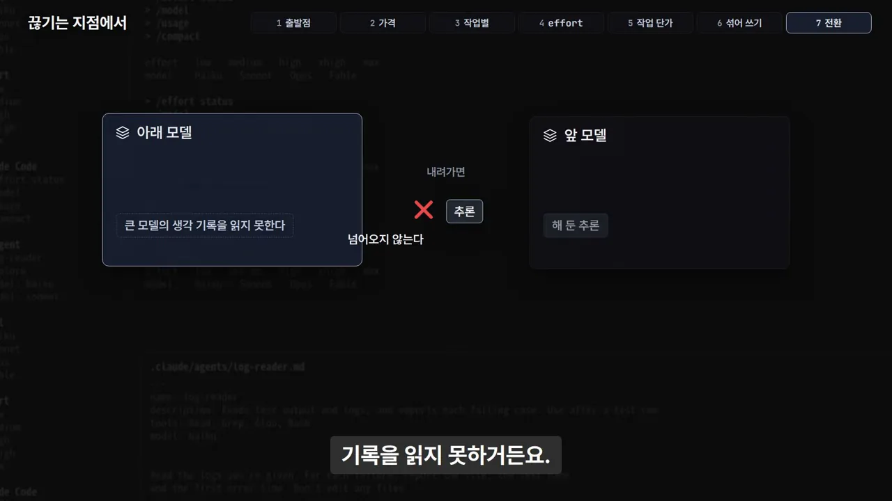
내 작업으로 재 보기
원문이 마지막에 강조하는 건 내 작업으로 재 보라는 거예요. 공개된 벤치마크는 출발점만 정해 주니까요. Claude Code에서 가장 간단한 방법이 화면에 있어요. 밀린 작업 하나를 골라, 왼쪽 모델 A와 오른쪽 모델 B에서 각각 /model로 모델을 바꿔 돌려요. 그다음 /usage에 나오는 사용량을 나란히 비교해요.
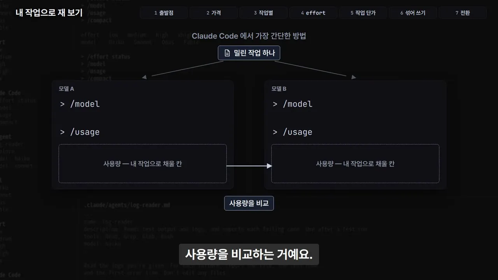
전체를 한 장으로 정리하면 이래요. 가운데 Opus 5.5 medium에 '여기서 출발' 깃발이 있어요. 오른쪽으로는 부족하면 effort를 한 칸 올리고, 위로는 high를 넘기게 되면 모델을 한 칸 올리고, 아래로는 단순한 일을 작은 모델로 내려요.
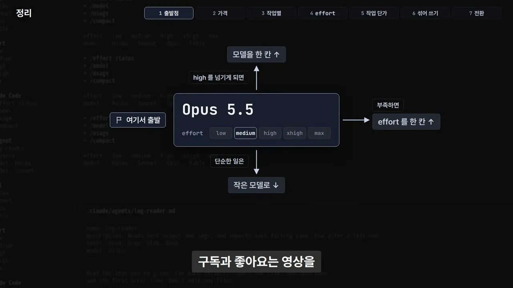